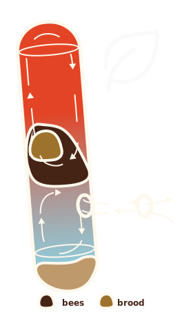
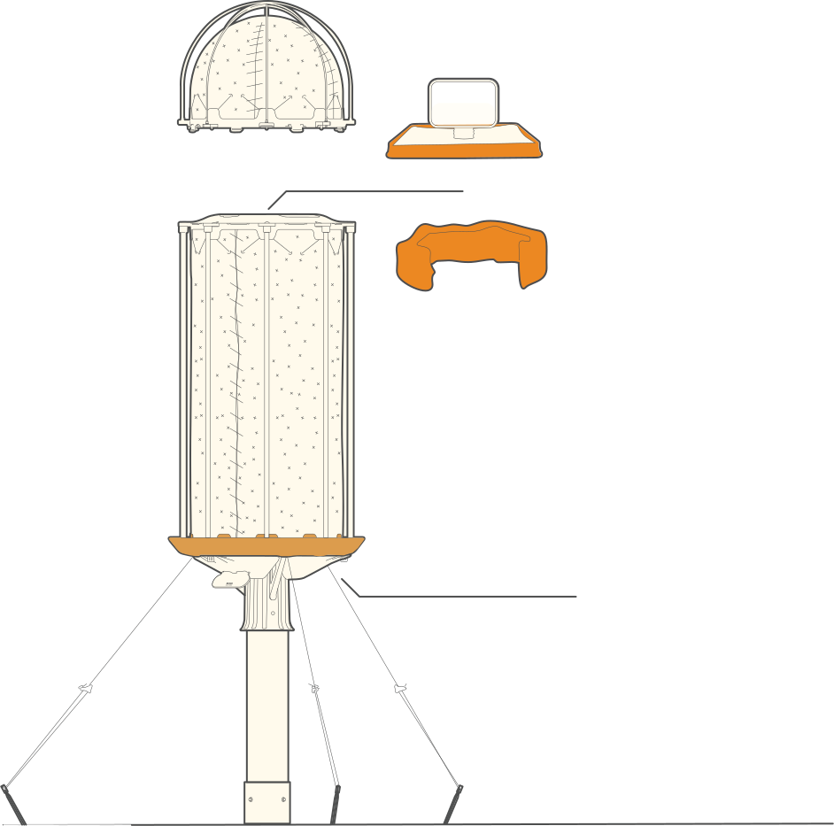

REPLICATING THE CONDITIONS OF A
300-YEAR-OLD TREE CAVITY
Artgerecht. Nach dem Vorbild der Natur.
Woran erkennen wir, ob unsere Bienen wirklich gesund leben? Nicht durch schnellen Blick oder reine Honigleistung – sondern durch das Beobachten natürlicher Verhaltensweisen und Energieverbrauch. In freier Wildbahn zeigt sich: Baumhöhlen bieten ideale Bedingungen, die das Überleben mit minimalem Aufwand ermöglichen. HIIVE macht sich genau dieses physikalische Prinzip zunutze – und überträgt es in die Imkerei. Das Ergebnis: ein habitatgerechtes Zuhause, in dem Bienen natürlich leben, Energie sparen und ihre Widerstandskraft entfalten können
HIIVE at a Glance
Key Benefits for Beekeepers & Researchers
True species-appropriate beekeeping.
Enables natural energy-saving
Behavier of bees
Behavier of bees
Drastically reduces bees’ energy
expenditure
expenditure
Supports bee resilience through targeted
stress reduction
stress reduction
Ergonomic like no other
yet it replicates a 300-year-old tree.
yet it replicates a 300-year-old tree.
Supports common health checks and
Varroa treatments.
Varroa treatments.
Fosters robust, adaptable
colonies
colonies
Tree Hollow as Standard
What advantages does nature
offer Apis mellifera?
Stable insulation with consistent
thermal performance!
thermal performance!
Moisture plays a crucial role in the insulation properties of materials, which is why effective moisture management is vital. Additionally, bees generate considerable moisture pressure in their environment due to their heat and activity. Therefore, log hives are not the same as tree cavities!
TIn winter, bees exert a constant diffusion pressure on the surrounding walls. Living wood absorbs the moisture that forms and transports it through the xylem flow down to the roots. This ensures that the insulation effect remains constant.
Dead wood, on the other hand, has a very limited ability to absorb moisture. It can only store a small amount and loses insulation performance with each additional water retention, as the moisture cannot be effectively drained or evaporated.
An energy-efficient geometry!
This special geometry is not formed by a woodpecker, but by a fungus that enters through a broken branch and grows upwards with water. The resulting narrow, cylindrical space allows the bees to use dynamic mechanisms to increase their energy efficiency, while also serving as a long-term nesting site
As is well known,
bees form a heat
plug in a cylinder
during winter to
separate warm and
cold air. We observed
in HIIVE that they
adjust the size of the
exhaust opening
depending on the
outside temperature.

In early spring, when
crocuses, snowdrops,
and winter aconites
bloom and nighttime
temperatures still
drop below freezing,
we observed that the
bees completely seal
the tube to retain
warmth for the
brood.
In summer, the bees
whirl cylindrically like
a cyclone. Compared
to box hives, this
system (also thanks
to the insulation) has
significantly fewer
workers engaged in
the fresh air
circulation.
HONEY = ENERGY
Combined, these factors drastically reduce the bees’ effort to regulate the hive’s climate — a crucial advantage for survival
5-7kg
Tree cavity:
Honey consumption over winter
15-25kg
Box hives:
Honey consumption over winter
Species-appropriate
How does HIIVE make a
difference for your bees?
ENABLES NATURAL BEE BEHAVIOR
TO SAFE SIGNIFICANT ENERGY
TO SAFE SIGNIFICANT ENERGY
HIIVE replicates the tree cavity features outlined earlier — enabling bees’ natural energy-saving behavior. Its geometry is based on the research of biologist Thomas Seeley, a leading expert in honeybee ecology. Combined with hemp wool insulation and a moisture-regulating barrier, HIIVE creates a stable Insulation YEAR-ROUND — just like a 300-year-old tree.
BIENEN MÜSSEN
DAS GANZE JAHR
ÜBER AM KLIMA
IM STOCK
ARBEITEN
THE WINTER CLUSTER
In the tree cavity-like
geometry, a narrow
cylinder, the bee colony can
position itself in the center
during winter, separating
the cold air at the bottom
from the warmer air above.
This allows air exchange to
occur slowly and controlled,
helping the bees save a lot
of energy during the winter
ENVIRONMENT
0°C / 32°F
RH 83 %
EIN ECHTES ENERGIESPARHAUS
WIE IN DER NATUR
WIE IN DER NATUR
Bienen verbrauchen in Magazinbeuten bis zu 5X mehr Energie nur um den Winter zu
Überleben! Und der Sommer mit zunehmenden Hitzeperioden ist nicht weniger belastend.
Auch wenn es abstrakt wirkt und Empathie für ein Insekt verlangt, so ist es doch
nachvollziehbar, dass es für jeden Organismus eine nicht unerheblich belastung ist das
Jahr über das bis zu Fünffache leisten zu mussen.


Tree Hollow as Standard
The advantages nature
offers honey bees
The honey super stays brood-free thanks to a queen excluder. With the bee
escape, you can remove the entire honey super without worker bees between
the combs — take it to a safe place and harvest in peace. Cold pressing is
the best way to extract honey gently.
With HIIVE, honey is cold-pressed by simply
cutting out the combs from the honey
chamber. There are special presses, but even
without fancy equipment and just basic
household tools, you can extract the
precious honey

Tools for Harvesting Honey
Honey Supper
Prevents the queen from laying brood
in the honey super, ensuring that the
harvested honey is free of eggs. The
excluder is designed so that only
worker bees can pass through
Queen Excluder
Prevents the queen from laying brood
in the honey super, ensuring that the
harvested honey is free of eggs. The
excluder is designed so that only
worker bees can pass through
Bee Escape
Once the honey super is filled with
comb, the bee escape is placed the
evening before harvesting. It allows
worker bees to return to the brood
chamber but prevents them from
re-entering the honey super. This
ensures a bee-free honey super the
next day
Various common
Varroa treatment
options are supported

 HIIVE allows for the use of common
treatment methods. Evaporative
treatment materials can be placed
in the top section, while the bottom
features an accessible bucket
system. A monitoring sheet (‘sticky
board’) beneath the hive enables
easy Varroa mite counting to assess
infestation levels
HIIVE allows for the use of common
treatment methods. Evaporative
treatment materials can be placed
in the top section, while the bottom
features an accessible bucket
system. A monitoring sheet (‘sticky
board’) beneath the hive enables
easy Varroa mite counting to assess
infestation levels
Über die Jahre haben wir beobachtet, dass einzelne Bienenvölker in HIIVE einen bemerkenswert niedrigen Varroadruck aufweisen. Wir vermuten, dass die Bienen die durch Isolierung und Geometrie eingesparte Energie für Grooming nutzen
Der Varroadruck hängt jedoch nicht nur vom System ab, sondern auch von Genetik und Verhalten des Volkes. Während einige Völker in HIIVE über Jahre ohne Behandlung auskamen, zeigten andere aus Kistenhaltung kaum natürliche Abwehrstrategien. HIIVE kann die Resilienz der Bienen unterstützen, aber ob eine behandlungsfreie Haltung möglich ist, hängt davon ab, ob die Bienen ihre natürlichen Mechanismen noch beherrschen
Wildbau für das
Wohl der Bienen
Über die Jahre haben wir
beobachtet, dass einzelne
Bienenvölker in HIIVE einen
bemerkenswert niedrigen
Varroadruck aufweisen. Wir
vermuten, dass die Bienen die
durch Isolierung und

Like an ancient tree,
only without sacrifice it.
only without sacrifice it.
WPC Material
We take responsibility for both the
production and recycling of our raw
materials. If your HIIVE is damaged or
no longer needed, please reach out to
us at recycling@hiive.eu. We gladly
accept parts for upcycling and recy-
cling. Thank you.
Once HIIVE is out in nature, its sus- tainability during this period lies in your hands. Please handle it responsibly.
Once HIIVE is out in nature, its sus- tainability during this period lies in your hands. Please handle it responsibly.
We use WPC a wood Polypropylen Mix.
We take responsibility for both the
production and recycling of our raw
materials. If your HIIVE is damaged or
no longer needed, please reach out to
us at recycling@hiive.eu. We gladly
accept parts for upcycling and recy-
cling. Thank you.
Once HIIVE is out in nature, its sus-
tainability during this period lies in your
hands. Please handle it responsibly.